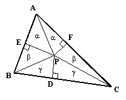

Proof that all triangles are isosceles
Given an arbitrary triangle ABC, draw the angle bisector of the interior angle at A, and draw the perpendicular bisector of segment BC at D, as shown below:

If the angle bisector at A and the perpendicular bisector of BC are parallel, then ABC is isosceles. On the other hand, if they are not parallel, they intersect at a point, which we call P, and we can draw the perpendiculars from P to AB at E, and to AC at F. Now, the two triangles labeled "alpha" in this figure have equal angles and share a common side, so they are totally equal. Therefore, PE = PF. Also, since D is the midpoint of BC, it's clear that the triangles labeled "gamma" are equal right triangles, and so PB = PC. From this it follows that the triangles labeled "beta" are similar and equal to each other, so we have BE+EA = CF+FA, meaning the triangle ABC is isosceles.
If the points P, E, and F fall outside triangle ABC, this proof follows in much the same way.
But obviously, something is wrong! Where is the logical fallacy?
(Note: this writeup was adapted from http://www.mathpages.com/home/kmath392/kmath392.htm. But that site has the solution, too: don't look it up!)